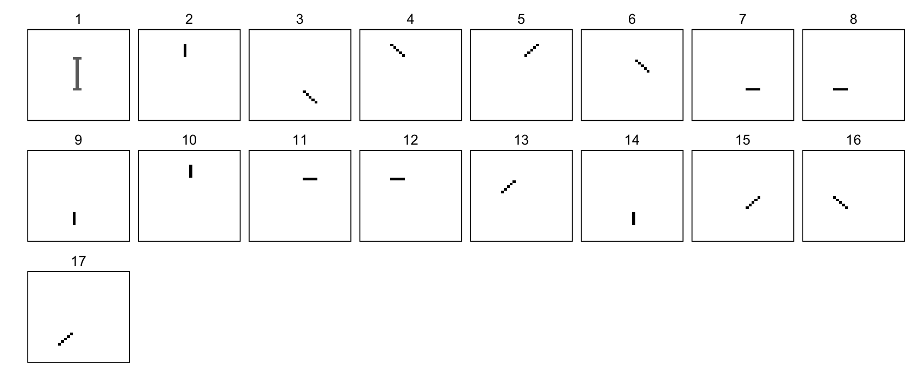
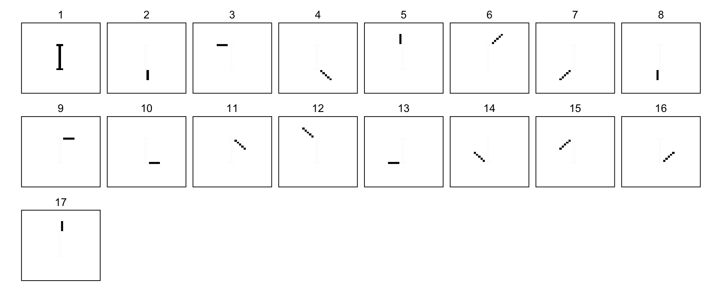
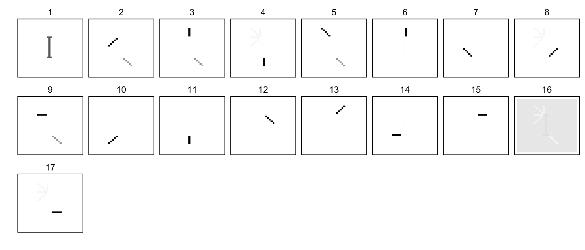

More NMF analyses of the swimmer dataset
Peter Carbonetto
Last updated: 2024-01-04
Checks: 7 0
Knit directory: ebnmf-paper/
This reproducible R Markdown analysis was created with workflowr (version 1.7.1). The Checks tab describes the reproducibility checks that were applied when the results were created. The Past versions tab lists the development history.
Great! Since the R Markdown file has been committed to the Git repository, you know the exact version of the code that produced these results.
Great job! The global environment was empty. Objects defined in the global environment can affect the analysis in your R Markdown file in unknown ways. For reproduciblity it’s best to always run the code in an empty environment.
The command set.seed(20231214) was run prior to running
the code in the R Markdown file. Setting a seed ensures that any results
that rely on randomness, e.g. subsampling or permutations, are
reproducible.
Great job! Recording the operating system, R version, and package versions is critical for reproducibility.
Nice! There were no cached chunks for this analysis, so you can be confident that you successfully produced the results during this run.
Great job! Using relative paths to the files within your workflowr project makes it easier to run your code on other machines.
Great! You are using Git for version control. Tracking code development and connecting the code version to the results is critical for reproducibility.
The results in this page were generated with repository version 0681401. See the Past versions tab to see a history of the changes made to the R Markdown and HTML files.
Note that you need to be careful to ensure that all relevant files for
the analysis have been committed to Git prior to generating the results
(you can use wflow_publish or
wflow_git_commit). workflowr only checks the R Markdown
file, but you know if there are other scripts or data files that it
depends on. Below is the status of the Git repository when the results
were generated:
Ignored files:
Ignored: .Rhistory
Ignored: .Rproj.user/
Unstaged changes:
Modified: analysis/swimmer.Rmd
Modified: code/swimmer_functions.R
Note that any generated files, e.g. HTML, png, CSS, etc., are not included in this status report because it is ok for generated content to have uncommitted changes.
These are the previous versions of the repository in which changes were
made to the R Markdown (analysis/swimmer_more.Rmd) and HTML
(docs/swimmer_more.html) files. If you’ve configured a
remote Git repository (see ?wflow_git_remote), click on the
hyperlinks in the table below to view the files as they were in that
past version.
| File | Version | Author | Date | Message |
|---|---|---|---|---|
| Rmd | 0681401 | Jason Willwerscheid | 2024-01-04 | Merge branch ‘master’ of https://github.com/willwerscheid/ebnmf-paper |
| Rmd | bf27384 | Jason Willwerscheid | 2024-01-04 | add greedy initialization images |
| html | 5d21cb2 | Peter Carbonetto | 2024-01-04 | Build site. |
| Rmd | fa96691 | Peter Carbonetto | 2024-01-04 | wflow_publish("analysis/swimmer_more.Rmd", verbose = TRUE) |
| html | ce6db54 | Peter Carbonetto | 2024-01-03 | Added flashier result with fixed, sparse prior to swimmer_more. |
| Rmd | 9114490 | Peter Carbonetto | 2024-01-03 | wflow_publish("analysis/swimmer_more.Rmd", verbose = TRUE) |
| html | d5a139b | Peter Carbonetto | 2024-01-03 | Build site. |
| Rmd | 8e6e3e2 | Peter Carbonetto | 2024-01-03 | workflowr::wflow_publish("analysis/swimmer_more.Rmd", verbose = TRUE) |
| html | c8f4e59 | Peter Carbonetto | 2024-01-02 | Removed output from last code chunk in swimmer_more.Rmd. |
| Rmd | 46ac496 | Peter Carbonetto | 2024-01-02 | workflowr::wflow_publish("analysis/swimmer_more.Rmd", verbose = TRUE) |
| html | 8862dbc | Peter Carbonetto | 2024-01-02 | Fixed the last flashier analysis in swimmer_more.Rmd. |
| Rmd | b8f6cbb | Peter Carbonetto | 2024-01-02 | workflowr::wflow_publish("analysis/swimmer_more.Rmd", verbose = TRUE) |
| html | e42e804 | Peter Carbonetto | 2024-01-02 | Build site. |
| Rmd | 2404d81 | Peter Carbonetto | 2024-01-02 | workflowr::wflow_publish("analysis/swimmer_more.Rmd", verbose = TRUE) |
| html | b4a4907 | Peter Carbonetto | 2024-01-02 | Added some explanatory text to the swimmer_more analysis. |
| Rmd | c196d8f | Peter Carbonetto | 2024-01-02 | workflowr::wflow_publish("analysis/swimmer_more.Rmd", verbose = TRUE) |
| Rmd | 2d6bf15 | Peter Carbonetto | 2024-01-01 | Added boxes to panels in plot_images(). |
| Rmd | 4aed461 | Peter Carbonetto | 2024-01-01 | Working on adding variants of flash to the swimmer_more analysis. |
| html | efe3bc9 | Peter Carbonetto | 2023-12-31 | Added ‘default’ flash result to swimmer_more analysis. |
| Rmd | ea1c781 | Peter Carbonetto | 2023-12-31 | workflowr::wflow_publish("analysis/swimmer_more.Rmd", verbose = TRUE) |
| html | f4cdd1b | Peter Carbonetto | 2023-12-30 | Added sparseNMF estmates to swimmer_more analysis. |
| Rmd | a6ac453 | Peter Carbonetto | 2023-12-30 | workflowr::wflow_publish("analysis/swimmer_more.Rmd") |
| html | 02ce52d | Peter Carbonetto | 2023-12-30 | Improved the plot_images function for the swimmer data analyses. |
| Rmd | 7a2e9ff | Peter Carbonetto | 2023-12-30 | workflowr::wflow_publish("analysis/swimmer_more.Rmd") |
| html | 5552850 | Peter Carbonetto | 2023-12-29 | Added visualization of NMF model fit to swimmer_more analysis. |
| Rmd | 8b27cdc | Peter Carbonetto | 2023-12-29 | workflowr::wflow_publish("analysis/swimmer_more.Rmd") |
| html | 2fe2911 | Peter Carbonetto | 2023-12-29 | First build of the swimmer_more analysis. |
| Rmd | 714fff1 | Peter Carbonetto | 2023-12-29 | workflowr::wflow_publish("swimmer_more.Rmd") |
| Rmd | ec0a1ad | Peter Carbonetto | 2023-12-29 | workflowr::wflow_publish("index.Rmd") |
This workflowr page contains some additional explorations of NMF methods (and the EBNMF methods implemented in flashier) for learning parts from the swimmer data set.
First, load the packages and some custom functions needed for the analysis below.
library(R.matlab)
library(tibble)
library(dplyr)
library(tidyr)
library(ggplot2)
library(cowplot)
library(ebnm)
library(flashier)
source("code/swimmer_functions.R")Initialize the sequence of pseudorandom numbers.
set.seed(1)Load the swimmer data set.
Y <- readMat("data/swimmer.mat")$Y
Y <- apply(Y,3,as.vector)
Y <- Y - 1This is the decomposition produced by “vanilla NMF” with 16 faactors—by “vanilla”, we mean NMF without any penalties on the parameters. See swimmer.m for details.
nmf <- readMat("matlab/swimmer_nmf.mat")
plot_images(nmf$W,nrow = 2,ncol = 8)
# Warning: The `size` argument of `element_rect()` is deprecated as of ggplot2 3.4.0.
# ℹ Please use the `linewidth` argument instead.
# This warning is displayed once every 8 hours.
# Call `lifecycle::last_lifecycle_warnings()` to see where this warning was
# generated.
This vanilla NMF doesn’t identify the correct “parts” because all the factors include the torso. Perhaps encouraging the parts to be more sparse — and therefore capturing more local features — would help with this. In this second attempt (also implemented in swimmer.m), we forced the average sparsity of the 17 factors to be at least 0.95:
sparse_nmf <- readMat("matlab/swimmer_nmf_sW=0.95.mat")
plot_images(sparse_nmf$W,nrow = 3,ncol = 8)
However, this doesn’t seem to help: the solution satisfies the sparsity constraint by forcing some of the factors to represent multiple parts, which is the opposite of what we actually want.
Note that the vanilla NMF estimates were already very sparse which waas why we need to constrain the sparsity on \(\mathbf{W}\) to be at least 0.95:
mean(nmf$sp)
mean(sparse_nmf$sp)
# [1] 0.9124888
# [1] 0.9501749Let’s now compare the NMF estimtes to a decomposition-by-parts
obtained by running flashier with sparse, non-negative priors
(ebnm_point_exponential). Remarkably, running flash with
the point-exponential prior gets the right result, automatically
splitting the torso and limb positions correctly into 17 factors, and
adapting the priors to capture the fact that the factors are very sparse
(note that we did not tell flashier that we wanted exactly 17
factors):
fit1 <- flash(Y,ebnm_fn = ebnm_point_exponential,
backfit = TRUE,var_type = 0)
plot_images(ldf(fit1)$L,nrow = 3,ncol = 8)
Let’s now look at this remarkable result more closely.
By default, flashier initializes the factors in a “greedy” way, which is different from the more typical random initialization in NMF. Indeed, SparseNMF.m is initialized at random by default. The greedy initialization appears as follows:
fit_greedyinit <- flash(Y,ebnm_fn = ebnm_point_exponential,
backfit = FALSE,var_type = 0,verbose = 0)
plot_images(ldf(fit_greedyinit)$L,nrow = 3,ncol = 8)
The greedy initialization appears particularly well suited for the swimmer data set (backfitting only needs to clean up the first factor). So let’s see what happens when we initialize the flashier factorization at random.
Also, let’s see what happens when we don’t adapt the prior. Let’s start with a naive “flat” prior, and fix it rather than allow it to adapt it to the data. (Specifically, here we are using an exponential prior with large scale parameter.)
set.seed(1)
n <- nrow(Y)
m <- ncol(Y)
k <- 17
flat_prior <- ebnm_unimodal_nonnegative(x = runif(100,0,100),
gridmult = 10,nullweight = 4)
ebnm_flat_prior <- flash_ebnm(prior_family = "unimodal_nonnegative",
fix_g = TRUE,g_init = flat_prior)
fl_flat <- flash_init(Y,var_type = 0)
fl_flat <- flash_factors_init(fl_flat,
list(matrix(runif(n*k),n,k),
matrix(runif(m*k),m,k)),
ebnm_flat_prior)
fl_flat <- flash_backfit(fl_flat)
plot_images(ldf(fl_flat)$L,nrow = 3,ncol = 8)
Even with this “flat” prior (and with a random initialization), flashier still did remarkably well in recovering the parts, although not quite as well as first flashier fit above. (It is possible that this so-called “flat” prior might actually encourage the factors to be sparse—I haven’t looked at this closely.)
Now let’s see if a “sparse prior”—that is, a prior with most of its weight on zero—improves the result:
set.seed(1)
sparse_prior <- ebnm_point_exponential(x = c(rep(1,100)))
sparse_prior$fitted_g$pi <- c(0.999,0.001)
ebnm_sparse_prior <- flash_ebnm(prior_family = "point_exponential",
fix_g = TRUE,g_init = sparse_prior)
fl_sparse <- flash_init(Y,var_type = 0)
fl_sparse <- flash_factors_init(fl_sparse,
list(matrix(runif(n*k),n,k),
matrix(runif(m*k),m,k)),
ebnm_sparse_prior)
fl_sparse <- flash_backfit(fl_sparse)
plot_images(ldf(fl_sparse)$L,nrow = 3,ncol = 8)
| Version | Author | Date |
|---|---|---|
| d5a139b | Peter Carbonetto | 2024-01-03 |
The sparse prior improved the decomposition considerably by “cleaning up” some of the factors.
Let’s now see if we can also get a good result by tuning the priors automatically based on the data. Adapting the priors only seems to work in this example if we first provide a good initialization, so here we initialize based on the factors estimated with the flat priors:
L0 <- ldf(fl_flat)$L
F0 <- ldf(fl_flat)$F
fl_adapt <- flash_init(Y,var_type = 0)
fl_adapt <- flash_factors_init(fl_adapt,list(L0,F0),ebnm_point_exponential)
fl_adapt <- flash_backfit(fl_adapt)
plot_images(ldf(fl_adapt)$L,nrow = 3,ncol = 8)
This improved the earlier result with flat priors, but didn’t work as well as the fixed sparse priors.
Adapting the priors is a “chicken-and-egg” problem that can be sensitive to initialization, so if we provide flashier with the better estimates with the sparse priors, adapting the priors does indeed improve the result further:
L0 <- ldf(fl_sparse)$L
F0 <- ldf(fl_sparse)$F
fl_adapt2 <- flash_init(Y,var_type = 0)
fl_adapt2 <- flash_factors_init(fl_adapt2,list(L0,F0),ebnm_point_exponential)
fl_adapt2 <- flash_backfit(fl_adapt2)
plot_images(ldf(fl_adapt2)$L,nrow = 3,ncol = 8)
| Version | Author | Date |
|---|---|---|
| ce6db54 | Peter Carbonetto | 2024-01-03 |
ADD TEXT HERE.
rnorm(10)
# [1] 0.55823201 -0.07864577 0.74808608 -0.34911152 0.94649786 1.60628090
# [7] -0.53901870 -0.13099663 1.03559345 0.76750167
sessionInfo()
# R version 4.2.1 (2022-06-23)
# Platform: aarch64-apple-darwin20 (64-bit)
# Running under: macOS Monterey 12.3
#
# Matrix products: default
# BLAS: /Library/Frameworks/R.framework/Versions/4.2-arm64/Resources/lib/libRblas.0.dylib
# LAPACK: /Library/Frameworks/R.framework/Versions/4.2-arm64/Resources/lib/libRlapack.dylib
#
# locale:
# [1] en_US.UTF-8/en_US.UTF-8/en_US.UTF-8/C/en_US.UTF-8/en_US.UTF-8
#
# attached base packages:
# [1] stats graphics grDevices utils datasets methods base
#
# other attached packages:
# [1] flashier_1.0.20 magrittr_2.0.3 ebnm_1.1-4 cowplot_1.1.1
# [5] ggplot2_3.4.4 tidyr_1.3.0 dplyr_1.1.3 tibble_3.2.1
# [9] R.matlab_3.7.0 workflowr_1.7.1
#
# loaded via a namespace (and not attached):
# [1] Rcpp_1.0.11 horseshoe_0.2.0 invgamma_1.1 lattice_0.22-5
# [5] getPass_0.2-2 ps_1.7.5 rprojroot_2.0.4 digest_0.6.33
# [9] utf8_1.2.4 truncnorm_1.0-9 R6_2.5.1 evaluate_0.23
# [13] highr_0.10 httr_1.4.7 pillar_1.9.0 rlang_1.1.2
# [17] rstudioapi_0.15.0 irlba_2.3.5.1 whisker_0.4.1 callr_3.7.3
# [21] jquerylib_0.1.4 R.utils_2.12.2 R.oo_1.25.0 Matrix_1.6-1.1
# [25] rmarkdown_2.25 labeling_0.4.3 splines_4.2.1 stringr_1.5.0
# [29] munsell_0.5.0 mixsqp_0.3-48 compiler_4.2.1 httpuv_1.6.12
# [33] xfun_0.41 pkgconfig_2.0.3 SQUAREM_2021.1 htmltools_0.5.7
# [37] tidyselect_1.2.0 fansi_1.0.5 crayon_1.5.2 withr_2.5.2
# [41] later_1.3.1 R.methodsS3_1.8.2 grid_4.2.1 jsonlite_1.8.7
# [45] gtable_0.3.4 lifecycle_1.0.3 git2r_0.32.0 scales_1.2.1
# [49] cli_3.6.1 stringi_1.7.12 cachem_1.0.8 farver_2.1.1
# [53] fs_1.6.3 promises_1.2.1 bslib_0.5.1 generics_0.1.3
# [57] vctrs_0.6.4 trust_0.1-8 tools_4.2.1 softImpute_1.4-1
# [61] glue_1.6.2 purrr_1.0.2 parallel_4.2.1 processx_3.8.2
# [65] fastmap_1.1.1 yaml_2.3.7 colorspace_2.1-0 ashr_2.2-63
# [69] deconvolveR_1.2-1 knitr_1.45 sass_0.4.7